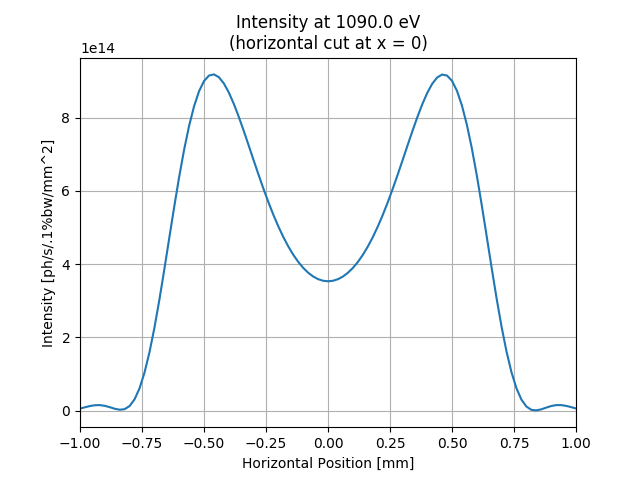

Note
Click here to download the full example code
SRW Example #3¶
Problem¶
Calculating synchrotron (undulator) radiation emitted by an electron travelling in ellipsoidal undulator
Example Solution¶


- 
Out:
SRWLIB Python Example # 3:
Calculating synchrotron (undulator) radiation emitted by an electron travelling in a helical undulator
Performing Electric Field (spectrum vs photon energy) calculation ... done
Extracting Intensity from calculated Electric Field ... done
Performing Electric Field (wavefront at fixed photon energy) calculation ... done
Extracting Intensity from calculated Electric Field ... done
Saving intensity data to files ... done
Plotting the results (blocks script execution; close any graph windows to proceed) ... done
from __future__ import print_function #Python 2.7 compatibility
from srwlib import *
from uti_plot import *
import os
print('SRWLIB Python Example # 3:')
print('Calculating synchrotron (undulator) radiation emitted by an electron travelling in a helical undulator')
#**********************Input Parameters:
strExDataFolderName = 'data_example_03' #example data sub-folder name
strTrajOutFileName = 'ex03_res_traj.dat' #file name for output trajectory data
strIntOutFileName1 = 'ex03_res_int1.dat' #file name for output SR intensity data
strIntOutFileName2 = 'ex03_res_int2.dat' #file name for output SR intensity data
#***********Undulator
numPer = 40.5 #Number of ID Periods (without counting for terminations
undPer = 0.049 #Period Length [m]
Bx = 0.57/3. #Peak Horizontal field [T]
By = 0.57 #Peak Vertical field [T]
phBx = 0 #Initial Phase of the Horizontal field component
phBy = 0 #Initial Phase of the Vertical field component
sBx = -1 #Symmetry of the Horizontal field component vs Longitudinal position
sBy = 1 #Symmetry of the Vertical field component vs Longitudinal position
xcID = 0 #Transverse Coordinates of Undulator Center [m]
ycID = 0
zcID = 0 #Longitudinal Coordinate of Undulator Center [m]
und = SRWLMagFldU([SRWLMagFldH(1, 'v', By, phBy, sBy, 1), SRWLMagFldH(1, 'h', Bx, phBx, sBx, 1)], undPer, numPer) #Ellipsoidal Undulator
magFldCnt = SRWLMagFldC([und], array('d', [xcID]), array('d', [ycID]), array('d', [zcID])) #Container of all Field Elements
#***********Electron Beam
elecBeam = SRWLPartBeam()
elecBeam.Iavg = 0.5 #Average Current [A]
elecBeam.partStatMom1.x = 0. #Initial Transverse Coordinates (initial Longitudinal Coordinate will be defined later on) [m]
elecBeam.partStatMom1.y = 0.
elecBeam.partStatMom1.z = -0.5*undPer*(numPer + 4) #Initial Longitudinal Coordinate (set before the ID)
elecBeam.partStatMom1.xp = 0 #Initial Relative Transverse Velocities
elecBeam.partStatMom1.yp = 0
elecBeam.partStatMom1.gamma = 3./0.51099890221e-03 #Relative Energy
#***********Precision
meth = 1 #SR calculation method: 0- "manual", 1- "auto-undulator", 2- "auto-wiggler"
relPrec = 0.01 #relative precision
zStartInteg = 0 #longitudinal position to start integration (effective if < zEndInteg)
zEndInteg = 0 #longitudinal position to finish integration (effective if > zStartInteg)
npTraj = 20000 #Number of points for trajectory calculation
useTermin = 1 #Use "terminating terms" (i.e. asymptotic expansions at zStartInteg and zEndInteg) or not (1 or 0 respectively)
sampFactNxNyForProp = 0 #sampling factor for adjusting nx, ny (effective if > 0)
arPrecPar = [meth, relPrec, zStartInteg, zEndInteg, npTraj, useTermin, sampFactNxNyForProp]
#***********Wavefront
wfr1 = SRWLWfr() #For spectrum vs photon energy
wfr1.allocate(10000, 1, 1) #Numbers of points vs Photon Energy, Horizontal and Vertical Positions
wfr1.mesh.zStart = 20. #Longitudinal Position [m] at which SR has to be calculated
wfr1.mesh.eStart = 10. #Initial Photon Energy [eV]
wfr1.mesh.eFin = 3000. #Final Photon Energy [eV]
wfr1.mesh.xStart = 0. #Initial Horizontal Position [m]
wfr1.mesh.xFin = 0 #Final Horizontal Position [m]
wfr1.mesh.yStart = 0 #Initial Vertical Position [m]
wfr1.mesh.yFin = 0 #Final Vertical Position [m]
wfr1.partBeam = elecBeam
wfr2 = SRWLWfr() #For intensity distribution at fixed photon energy
wfr2.allocate(1, 101, 101) #Numbers of points vs Photon Energy, Horizontal and Vertical Positions
wfr2.mesh.zStart = 20. #Longitudinal Position [m] at which SR has to be calculated
wfr2.mesh.eStart = 1090. #Initial Photon Energy [eV]
wfr2.mesh.eFin = 1090. #Final Photon Energy [eV]
wfr2.mesh.xStart = -0.001 #Initial Horizontal Position [m]
wfr2.mesh.xFin = 0.001 #Final Horizontal Position [m]
wfr2.mesh.yStart = -0.001 #Initial Vertical Position [m]
wfr2.mesh.yFin = 0.001 #Final Vertical Position [m]
wfr2.partBeam = elecBeam
#**********************Calculation (SRWLIB function calls)
print(' Performing Electric Field (spectrum vs photon energy) calculation ... ', end='')
srwl.CalcElecFieldSR(wfr1, 0, magFldCnt, arPrecPar)
print('done')
print(' Extracting Intensity from calculated Electric Field ... ', end='')
arI1 = array('f', [0]*wfr1.mesh.ne)
srwl.CalcIntFromElecField(arI1, wfr1, 6, 0, 0, wfr1.mesh.eStart, wfr1.mesh.xStart, wfr1.mesh.yStart)
print('done')
print(' Performing Electric Field (wavefront at fixed photon energy) calculation ... ', end='')
srwl.CalcElecFieldSR(wfr2, 0, magFldCnt, arPrecPar)
print('done')
print(' Extracting Intensity from calculated Electric Field ... ', end='')
arI2 = array('f', [0]*wfr2.mesh.nx*wfr2.mesh.ny) #"flat" array to take 2D intensity data
srwl.CalcIntFromElecField(arI2, wfr2, 6, 0, 3, wfr2.mesh.eStart, 0, 0)
print('done')
#**********************Saving results to files
print(' Saving intensity data to files ... ', end='')
srwl_uti_save_intens_ascii(arI1, wfr1.mesh, os.path.join(os.getcwd(), strExDataFolderName, strIntOutFileName1), 0)
srwl_uti_save_intens_ascii(arI2, wfr2.mesh, os.path.join(os.getcwd(), strExDataFolderName, strIntOutFileName2), 0)
print('done')
#**********************Plotting results (requires 3rd party graphics package)
print(' Plotting the results (blocks script execution; close any graph windows to proceed) ... ', end='')
uti_plot1d(arI1, [wfr1.mesh.eStart, wfr1.mesh.eFin, wfr1.mesh.ne], ['Photon Energy [eV]', 'Intensity [ph/s/.1%bw/mm^2]', 'On-Axis Spectrum'])
uti_plot2d(arI2, [1000*wfr2.mesh.xStart, 1000*wfr2.mesh.xFin, wfr2.mesh.nx], [1000*wfr2.mesh.yStart, 1000*wfr2.mesh.yFin, wfr2.mesh.ny], ['Horizontal Position [mm]', 'Vertical Position [mm]', 'Intensity at ' + str(wfr2.mesh.eStart) + ' eV'])
arI2x = array('f', [0]*wfr2.mesh.nx) #array to take 1D intensity data (vs X)
srwl.CalcIntFromElecField(arI2x, wfr2, 6, 0, 1, wfr2.mesh.eStart, 0, 0)
uti_plot1d(arI2x, [1000*wfr2.mesh.xStart, 1000*wfr2.mesh.xFin, wfr2.mesh.nx], ['Horizontal Position [mm]', 'Intensity [ph/s/.1%bw/mm^2]', 'Intensity at ' + str(wfr2.mesh.eStart) + ' eV\n(horizontal cut at x = 0)'])
arI2y = array('f', [0]*wfr2.mesh.ny) #array to take 1D intensity data (vs Y)
srwl.CalcIntFromElecField(arI2y, wfr2, 6, 0, 2, wfr2.mesh.eStart, 0, 0)
uti_plot1d(arI2y, [1000*wfr2.mesh.yStart, 1000*wfr2.mesh.yFin, wfr2.mesh.ny], ['Vertical Position [mm]', 'Intensity [ph/s/.1%bw/mm^2]', 'Intensity at ' + str(wfr2.mesh.eStart) + ' eV\n(vertical cut at y = 0)'])
uti_plot_show() #show all graphs (and block execution)
print('done')
Total running time of the script: ( 0 minutes 1.743 seconds)